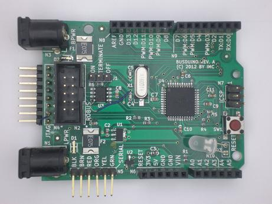

This is revision B of the MBino which is a module for the MakerBus Project.
An image of the MBino Revsion A is shown below:
To get a larger image, please click on the image. This was originally called the "BusDuino" before then name got shortened to "MBino".
The schematic is available as either a .pdf file or as a .svg (Scalable Vector Graphics) file. The .pdf file should print reasonably well on a black and white printer. The .svg file is embedded below:

There are two 2.1mm power jacks , N1 and N3. N1 feeds power through protection diode D1 and protection resettable polyfuse F2 to the LPWR1 and LWPR2 pins of MakeBus connector N2. D1 protects everthing if the power accidentally comes in with reverse polarity on N1. (Connector N2 is labeled as "Robus" which is the previous bus name to "MakerBus".) The ground line of N1 is also connected to LGND1 and LGND2 of N2. The same thing happens with N3, F1, and D2 with BPWR1, BPWR2, BGND1, and BGND2 on N2.
The LPWR1 and LPWR1 lines from N2 are further connected to the 5V linear regulator U1 and the 3.3V linear regulator U2 to provide 5 volts and 3.3 volts respectively.
CANH and CANL of N2 or connected to the 5V CAN bus transceiver chip U3. The 1 × 3 jumper J1 can be jumpered to connect a 124 ohm termination resistor R6. The 24K resistor R9 enables slope control for U3. The TXD and RXD pins are connected to the microcontroller U4 pins PD3 (TXD1) and PD2 (RXD1). Capacitors C5-C10 are .1µF bypass capacitors for U4 and U3. 16MHz crystal X1 and crystal 22pF capactiors C4 and C5 provide the 16MHz frequency reference for U4.
Connector N4 is a 2×8 pin combined JTAG and serial download connector that connects to the various JTAG pins on the microcontroller (U4). The serial debug lines from N4 are also connected to the 1×6 serial cable pin N5 before connecting to PD1 (TXD0) and PD0 (RXD0) on U4 through 1K ohm resistors R2 and R3. R2 and R3 pins D0 (N9) and D1 (N9) to have priority over over both N4 and N5 is voltage sources are connected to both at the same time. It is a really bad idea to attempt to use both N4 and N5 for serial downloading at the same time. 10K ohm resistor R1 and 1µF capacitor C12 provide a simple reset circuit to trigger RESET on U4. The reset button SW1 can also be used to manually reset U4.
470 Ohm resistor R8 and LED D4 are connected to D13 (N8) to provide an on-board LED. 470 ohm resistor R7 and bicolor LED D3 are only meant to be used for debugging; they are not installed in the final product. Connectors N6 (Power/Reset pins), N7 (ISP header), N8 (D0-D13, GND, AREF), N9 (D0-D7) and N10 (A0-A5) are used used to connect to Arduino compatible shields.
4.7K ohm resistors R4 and R5 are available to be used as pull up resistors for the I2C bus pins connected to D13 (SCK) and D12 (MISO) pins on U4.
This board was designed using KiCAD. A complete KiCAD
archive of board is found in
busduino.zip. ("BusDuino" was the original name
of the board before it was renamed to "MBino".)
When this file is unzipped, the KiCad project file
can be found down in
robus/busdino/rev_b/busdino.pro. Various
shared .mod and .lib files
are kept in the robus directory. All
Gerber and drill files are generated using KiCad.
The following errors and issues are noted:
The design notes for the reset circuit are:
{Bootloader discussion goes here!}
The following URL specifies how to add a new board:
http://www.avr-developers.com/corefiles/index.html
The short answer is:
cd .../hardware
(cd arduino; tar cvf /tmp/arduino.tar .)
(mkdir {your_board_dir}; tar xvf /tmp/arduino.tar)
# now edit {your_board_dir}/boards.txt to configure your board
# now edit {your_board_dir}/programmers.txt
The problem with this strategy is that you get a snap-shot of
all the files and everything becomes out of date when the next
release of the Arduino IDE comes out. A better way is probably
to have a shell script that make a copy of arduino files followed
by a file that unzips the stuff that needs to be changed. That
may be just a few files.
Here are the files that have been edited so far:
// Add 4 pins to the vector for I2C SDA, SCL, and external pull-ups
SDA = 20
SCL = 21
port_to_mode_PGM = {
// Add &DDRA, // ATmega324 has a Port A
port_to_output_PGM = {
// Add &PORTA, // ATmega324 has a Port A
port_to_input_PGM = {
// Add &PINA, // ATmega324 has a Port A
digital_pin_to_port_PGM = {
// Remap digital pin ports
digital_pin_to_bit_mask_PGM = {
// Remap bit masks
Obviously thes is pretty minor changes.
{Create a .zip file that creates the various MBino sub-directories for the Arduino IDE.}